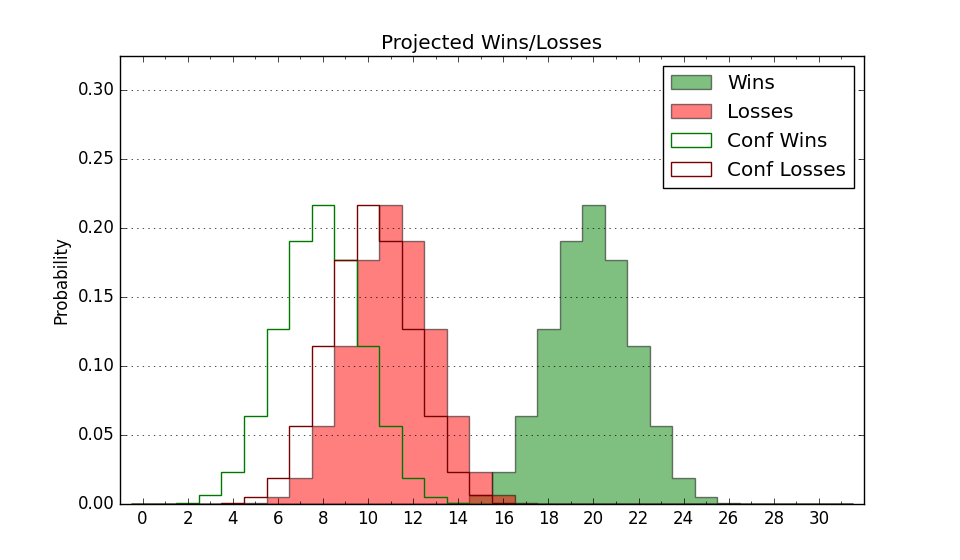

| Home | Game Probabilities | Conferences | Preseason Predictions | Odds Charts | NCAA Tournament |
| City: | Athens, Georgia | |
| Conference: | SEC (6th)
| |
| Record: | 1-1 (Conf) 13-2 (Overall) | |
| Ratings: | Comp.: 20.8 (36th) Net: 22.4 (33rd) Off: 114.3 (52nd) Def: 91.9 (20th) SoR: 81.1 (23rd) |
| Remaining | ||||||
|---|---|---|---|---|---|---|
| Date | Opponent | Win Prob | Pred. | |||
| 1/11 | Oklahoma (51) | 72.1% | W 77-70 | |||
| 1/15 | @ Tennessee (4) | 10.6% | L 59-73 | |||
| 1/18 | Auburn (1) | 17.8% | L 71-82 | |||
| 1/22 | @ Arkansas (47) | 41.5% | L 70-73 | |||
| 1/25 | @ Florida (7) | 15.7% | L 68-80 | |||
| 1/28 | South Carolina (99) | 87.8% | W 74-61 | |||
| 2/1 | @ Alabama (5) | 12.8% | L 74-89 | |||
| 2/5 | LSU (60) | 76.8% | W 75-66 | |||
| 2/8 | Mississippi St. (18) | 52.2% | W 72-71 | |||
| 2/11 | @ Texas A&M (21) | 24.5% | L 65-73 | |||
| 2/15 | Missouri (38) | 66.1% | W 76-71 | |||
| 2/22 | @ Auburn (1) | 6.0% | L 67-86 | |||
| 2/25 | Florida (7) | 38.8% | L 73-76 | |||
| 3/1 | @ Texas (29) | 30.8% | L 68-74 | |||
| 3/4 | @ South Carolina (99) | 67.8% | W 70-65 | |||
| 3/8 | Vanderbilt (49) | 71.4% | W 79-72 | |||
| Previous | Game Score | |||||
| Date | Opponent | Win Prob | Result | Off | Def | Net |
| 11/4 | Tennessee Tech (270) | 97.4% | W 83-78 | -4.4 | -21.3 | -25.6 |
| 11/10 | Texas Southern (307) | 98.3% | W 92-64 | 0.1 | -8.3 | -8.2 |
| 11/12 | North Florida (245) | 96.8% | W 90-77 | 3.9 | -15.7 | -11.9 |
| 11/15 | @Georgia Tech (112) | 72.1% | W 77-69 | -0.2 | 5.5 | 5.2 |
| 11/19 | Alabama A&M (361) | 99.6% | W 93-45 | 0.4 | 13.3 | 13.7 |
| 11/23 | (N) Marquette (14) | 35.6% | L 69-80 | -7.7 | -7.2 | -14.9 |
| 11/24 | (N) St. John's (35) | 49.8% | W 66-63 | -2.8 | 11.7 | 8.9 |
| 11/30 | Jacksonville (183) | 94.8% | W 102-56 | 29.0 | 4.5 | 33.6 |
| 12/3 | Notre Dame (71) | 80.5% | W 69-48 | 5.0 | 17.6 | 22.6 |
| 12/14 | (N) Grand Canyon (97) | 79.0% | W 73-68 | -5.5 | -0.9 | -6.4 |
| 12/19 | Buffalo (337) | 98.7% | W 100-49 | 20.6 | 12.7 | 33.4 |
| 12/22 | Charleston Southern (275) | 97.5% | W 81-65 | 0.9 | -12.7 | -11.8 |
| 12/29 | South Carolina St. (226) | 96.3% | W 79-72 | -6.9 | -12.5 | -19.4 |
| 1/4 | @Mississippi (28) | 30.7% | L 51-63 | -21.3 | 6.2 | -15.1 |
| 1/7 | Kentucky (16) | 50.6% | W 82-69 | -0.8 | 17.5 | 16.7 |
| Stats & Trends | |||||
|---|---|---|---|---|---|
| Current | Day | Week | Month | Season | |
| Composite | 20.8 | +0.1 | +0.3 | +0.7 | +9.6 |
| Comp Rank | 36 | -- | -1 | -4 | +41 |
| Net Efficiency | 22.4 | +0.1 | -0.1 | -1.8 | -- |
| Net Rank | 33 | +1 | -4 | -10 | -- |
| Off Efficiency | 114.3 | +0.1 | -1.4 | -0.6 | -- |
| Off Rank | 52 | -- | -6 | -3 | -- |
| Def Efficiency | 91.9 | -0.0 | +1.3 | -1.2 | -- |
| Def Rank | 20 | -- | +8 | -3 | -- |
| SoS Rank | 202 | +9 | +106 | +8 | -- |
| Exp. Wins | 19.9 | -0.0 | +0.1 | +0.2 | +4.1 |
| Exp. Conf Wins | 7.9 | -0.0 | +0.1 | -0.1 | +1.6 |
| Conf Champ Prob | 0.1 | -- | -0.1 | -0.3 | -0.1 |

| Advanced Stats | ||
|---|---|---|
| Stat | Value | Rank |
| Off Eff FG % | 0.551 | 62 |
| Off Ast Ratio | 0.151 | 150 |
| Off ORB% | 0.381 | 14 |
| Off TO Rate | 0.158 | 235 |
| Off FT Ratio | 0.424 | 29 |
| Def Eff FG % | 0.440 | 21 |
| Def Ast Ratio | 0.106 | 12 |
| Def ORB% | 0.250 | 60 |
| Def TO Rate | 0.172 | 68 |
| Def FT Ratio | 0.274 | 64 |